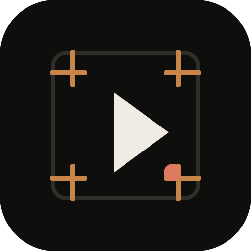
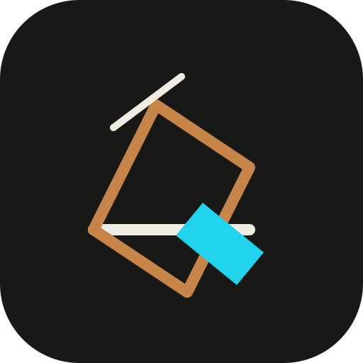
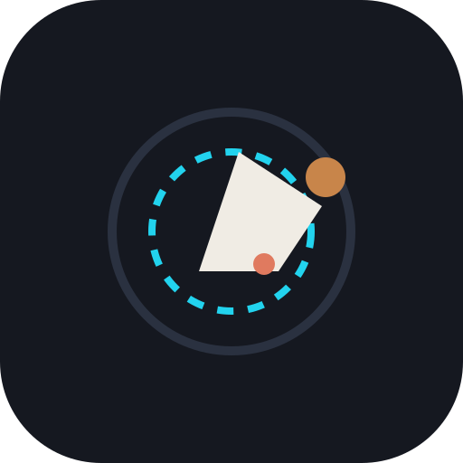
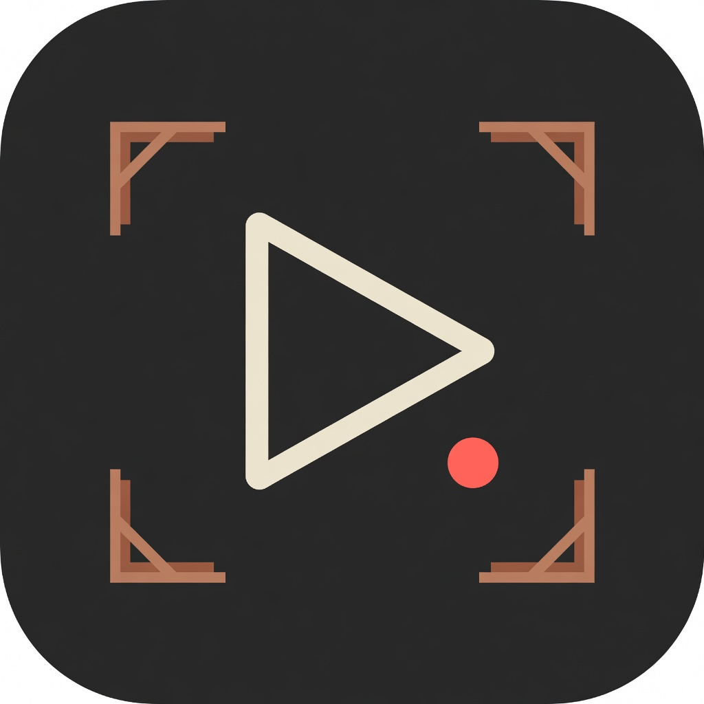
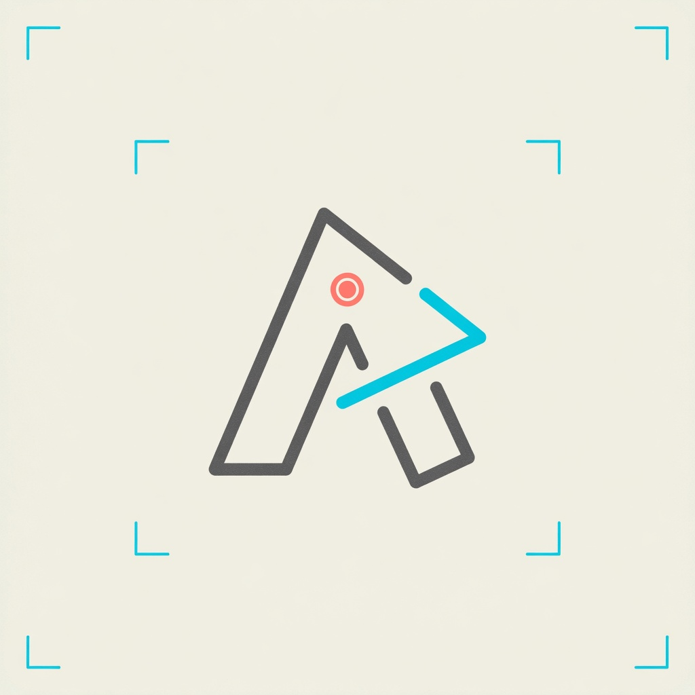
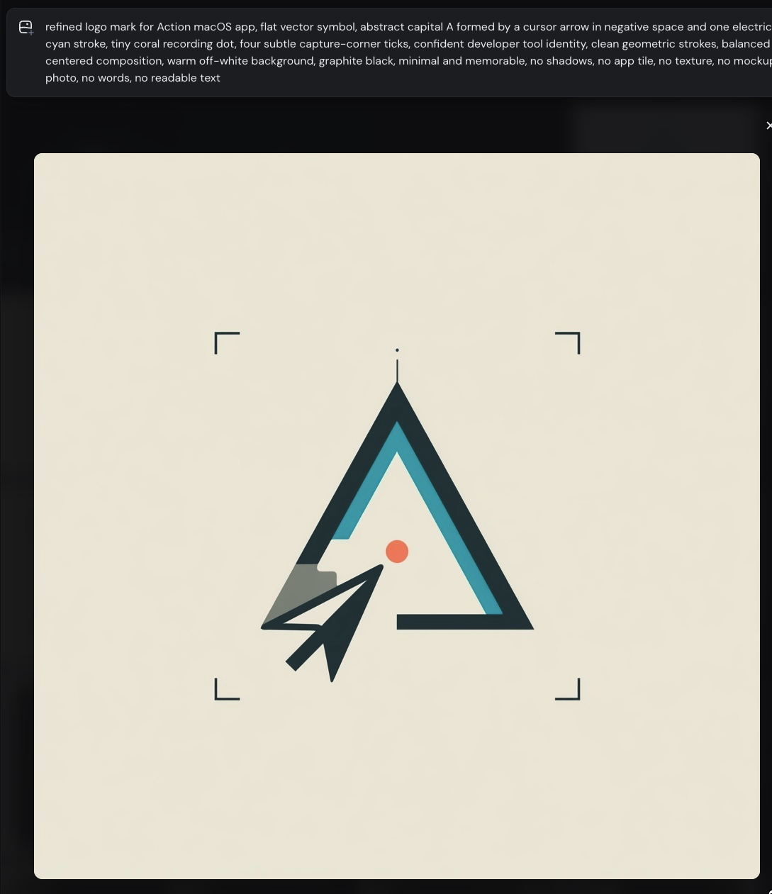

01 — Capture A
Evolution of the Mira poster. Cursor-in-A, cyan stroke, coral record dot, viewfinder ticks. Best primary app mark.
Brand / v0 explorations
Vector directions for Action and Mira — capture, stage, cinema, and agent browser. The Mira poster remains the anchor; these push app icon, site, and companion identity.







refined logo mark for Action macOS app, flat vector symbol, abstract capital A formed by cursor arrow negative space, one electric cyan stroke, tiny coral recording dot, four subtle capture-corner ticks, warm off-white field, graphite black, minimal memorable developer tool, no text, no mockup, no shadows --ar 1:1 --style raw